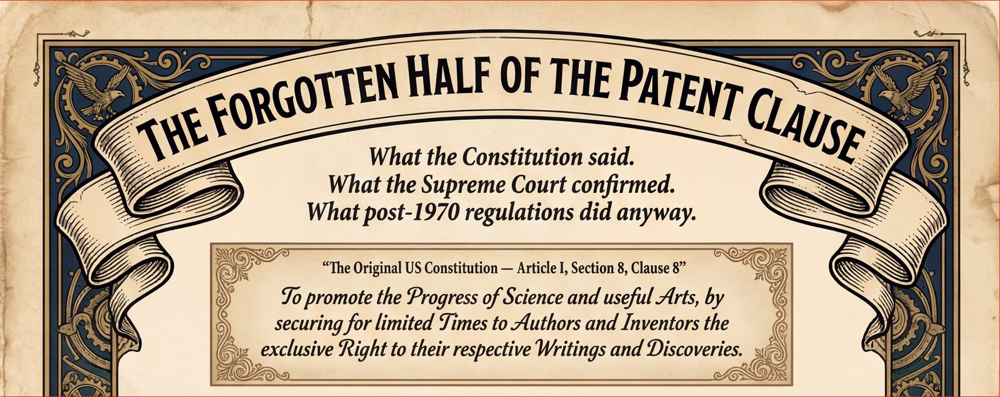

Reason the Constitutional Argument Yourself
These files accompany the chapter “Reason the Constitutional Argument Yourself: The Open-Book Examination” in the book The Forgotten Half of the Patent Clause: How Federal Regulations Doubled the Cost of American Living and Rewrote the Constitution by Roleigh Martin.
The chapter invites you to put the constitutional argument to an artificial-intelligence language model and judge for yourself whether the reasoning holds. To do that, download one of the exam files below, attach it to the AI, and paste in the prompts the chapter provides. The scoring sheet records what each model answers.
These files are provided free of charge to readers of that chapter.
Start a new chat with an AI language model. Tap the attach or paper-clip icon, choose the exam file you downloaded, then paste one of the prompts from the chapter. Run each prompt in a fresh chat so the model answers it on its own. Full step-by-step instructions are in Part Two of the chapter.
This constitutional argument is being prepared for federal court. As the book moves toward publishers, one question recurs: whether a non-lawyer can be trusted to handle the argument responsibly. A few words from a practicing attorney would answer that better than anything the author could say.
If you are a lawyer and, after reviewing the materials, you consider the work well-researched and deserving of serious consideration and a public hearing, the author welcomes a brief statement to that effect — in your own words, implying no agreement with the book’s conclusions. And if you simply know an attorney for whom this argument is suited, passing it along would be a real help.
Any attorney who reaches out can receive the complete Author’s Review manuscript — PDF, printed trade paperback (at cost), or EPUB. The one-page invitation above explains the request in full.